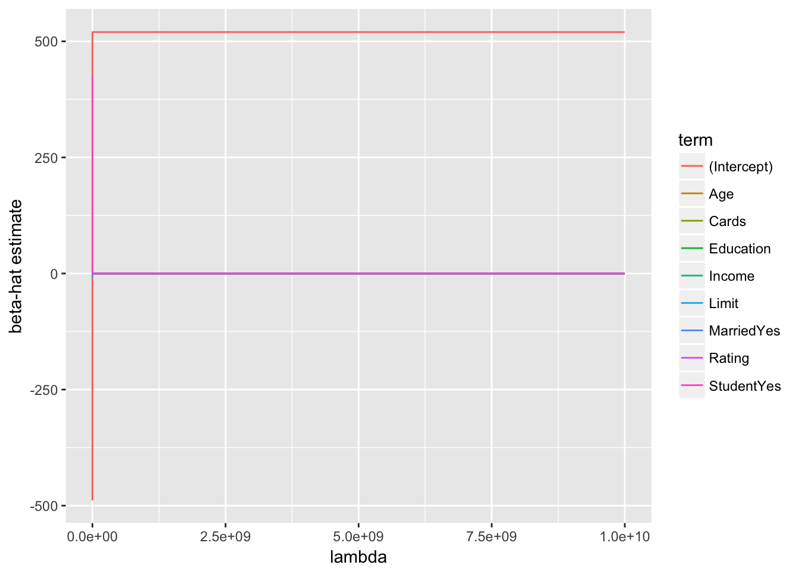
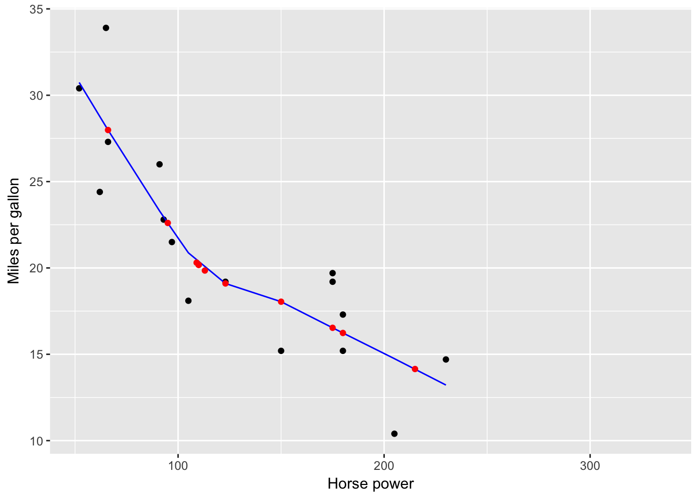
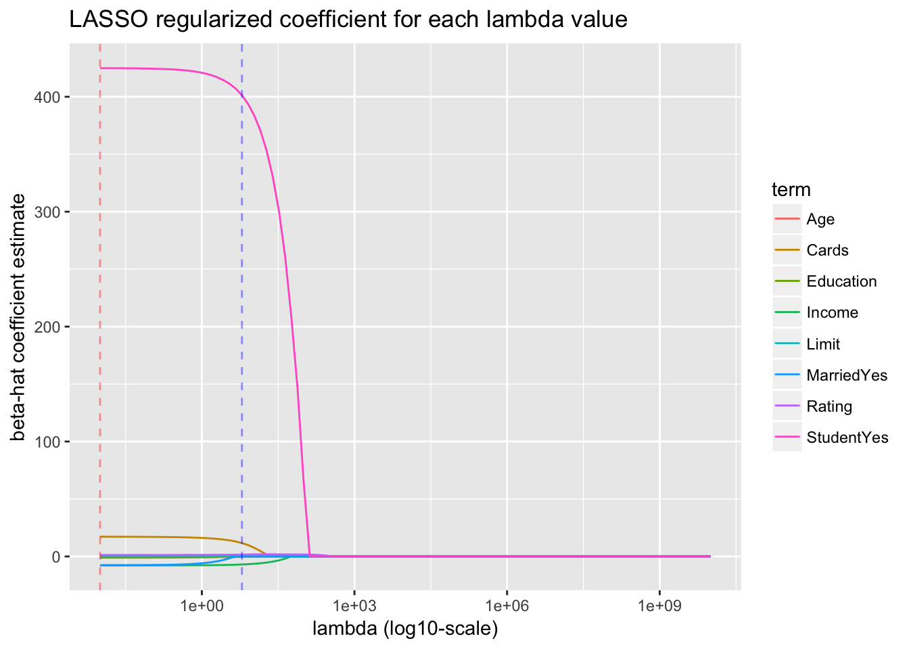
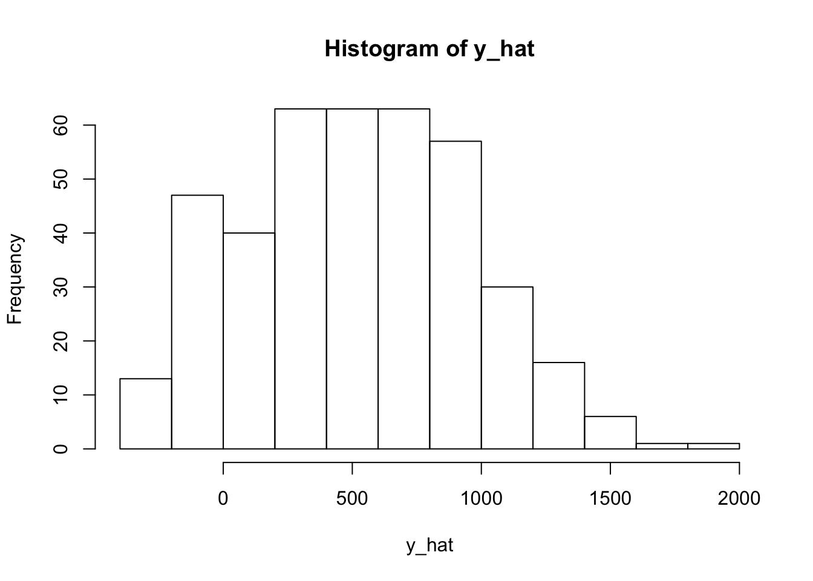
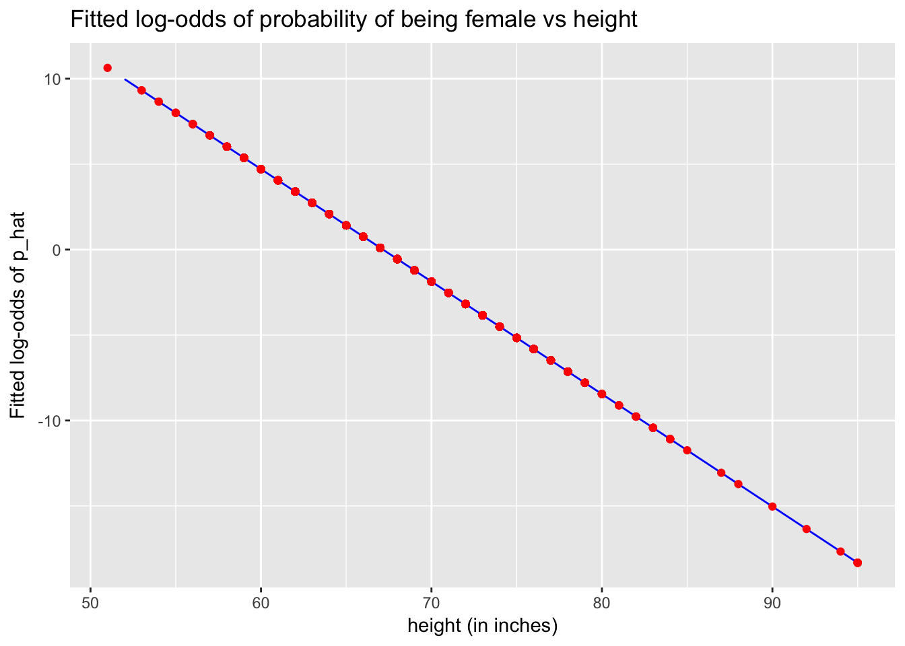
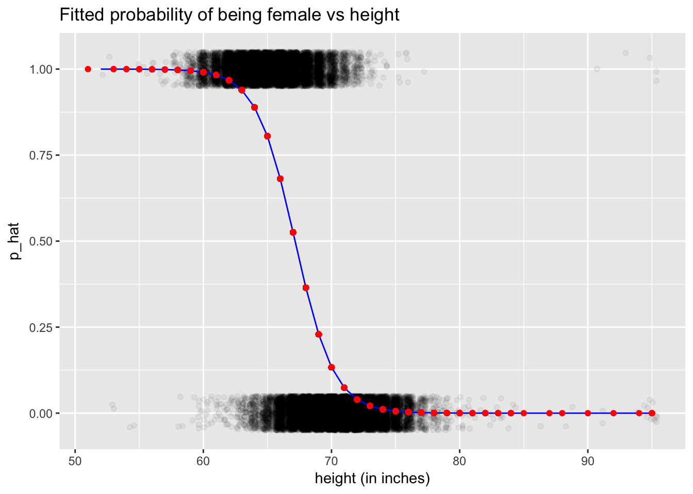
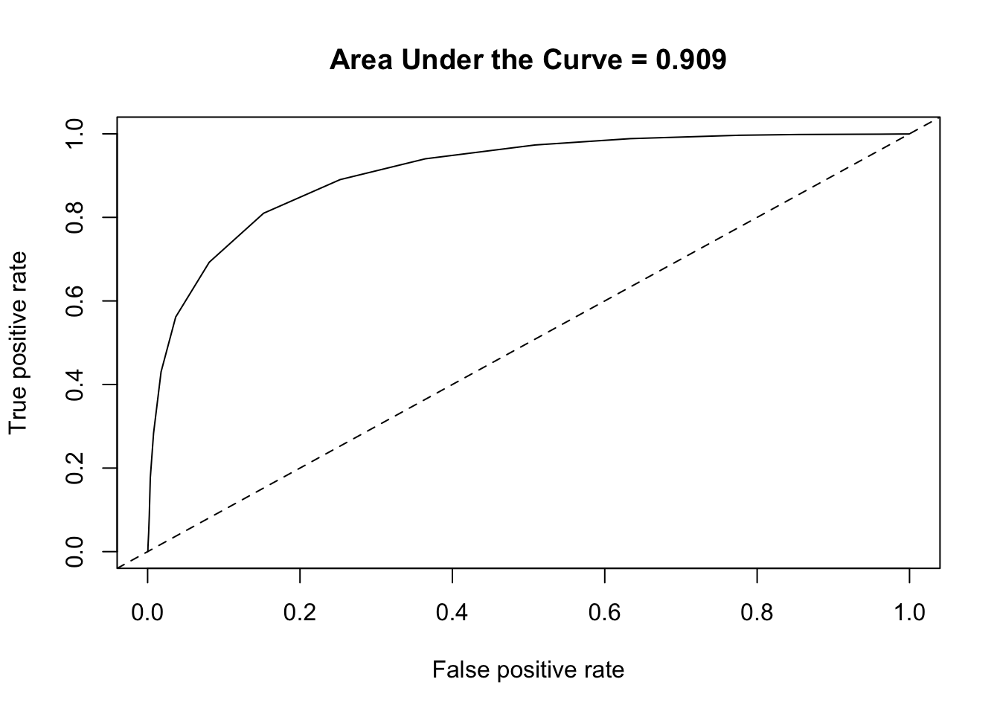
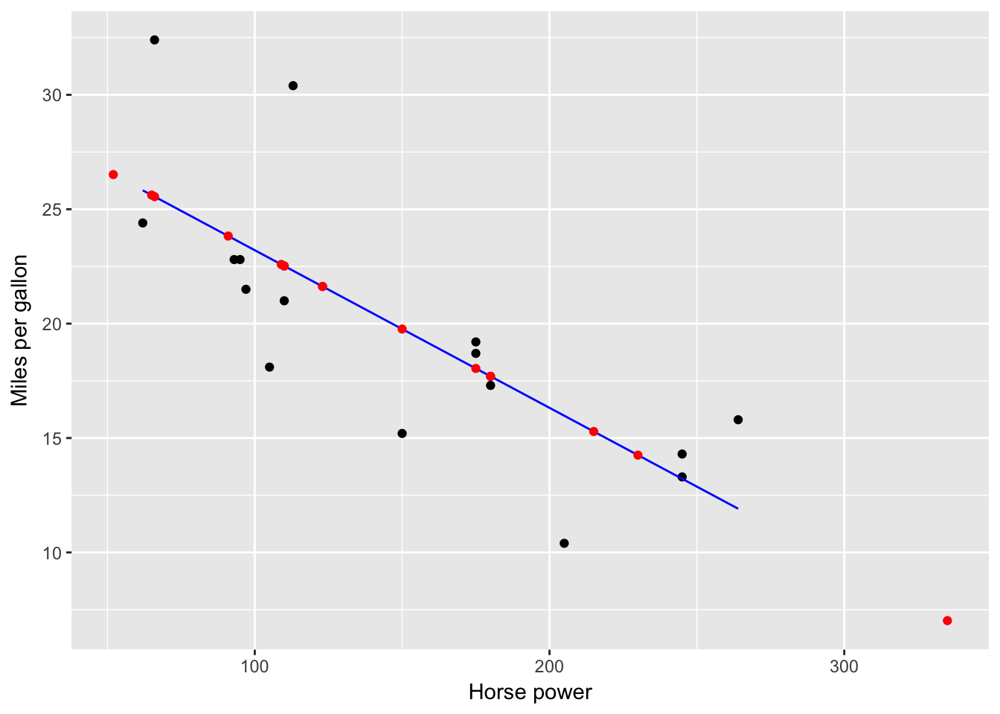
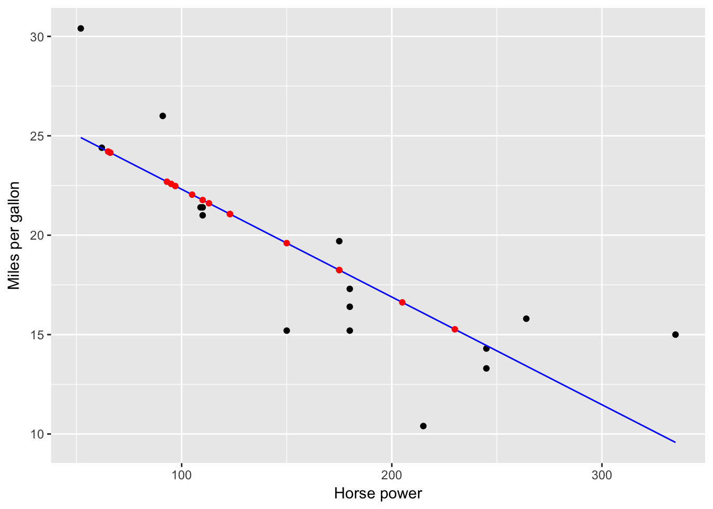
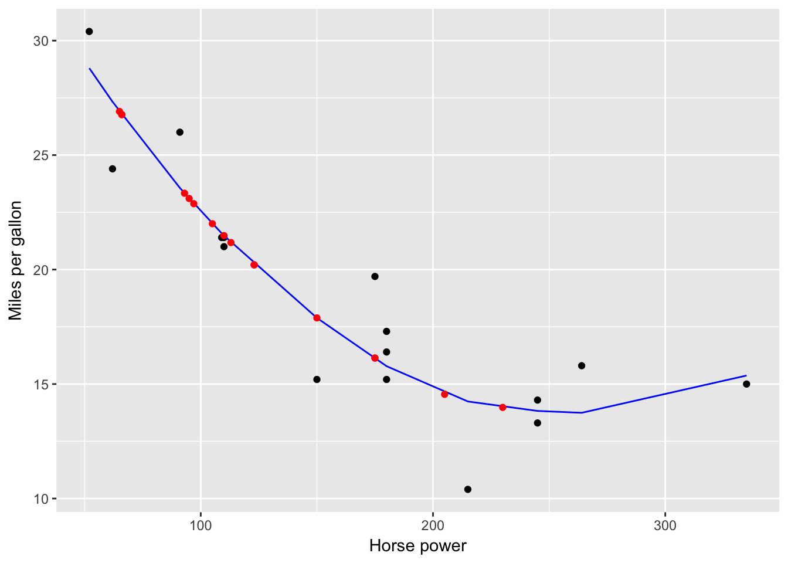

Quickstart Guide to Models
1 Regularization
library(tidyverse)
credit <- read_csv("http://www-bcf.usc.edu/~gareth/ISL/Credit.csv") %>%
mutate(ID=1:n()) %>%
select(ID, everything())1.1 LASSO
1.1.1 Fit/train model
# Load packages and wrapper functions. Note understanding the internal workings
# of the wrapper functions is not required. If you're curious why all this is
# needed: https://github.com/tidyverse/broom/issues/226
library(glmnet)
get_LASSO_coefficients <- function(LASSO_fit){
coeff_values <- LASSO_fit %>%
broom::tidy() %>%
as_tibble() %>%
select(-c(step, dev.ratio)) %>%
tidyr::complete(lambda, nesting(term), fill = list(estimate = 0)) %>%
arrange(desc(lambda)) %>%
select(term, estimate, lambda)
return(coeff_values)
}
# Define model formula:
model_formula <- as.formula("Balance ~ Income + Limit + Rating + Student + Cards + Age + Education + Married")
# Define "model matrix": Note that
# -This function conveniently converts all categorical outcomes to numerical
# ones using "one-hot encoding" as defined in the flashcard for Lec 3.7.
# -We also remove the first column corresponding to the intercept
predictor_matrix <- model.matrix(model_formula, data = credit)[, -1]
# Define values of tuning/complexity parameter lambda. Note:
# -They increase at an exponential rate in powers of 10
lambda_inputs <- 10^seq(-2, 10, length = 100)
# Fit the model using glmnet. Note:
# -Setting alpha=1 corresponds to LASSO.
# -Here we manually specify the lambda values to use. If we didn't set
# lambda = lambda_inputs, glmnet() would choose default values.
LASSO_fit <- glmnet(x=predictor_matrix, y=credit$Balance, alpha = 1, lambda = lambda_inputs)1.1.2 Coefficients analysis
For each predictor and each value of lambda_inputs, let’s look at the \(\widehat{\beta}\):
LASSO_coefficients <- get_LASSO_coefficients(LASSO_fit)
ggplot(LASSO_coefficients, aes(x=lambda, y=estimate, col=term)) +
geom_line() +
labs(x="lambda", y="beta-hat estimate")
There are two problems with this plot:
- We’re not interested in the value of the intercept, since this is left out of complexity penalization. So let’s ignore this.
- The values of \(\lambda\) on the x-axis are difficult to see, so let’s rescale the x-axis to be on a log-10 scale:
plot_LASSO_coefficients <- LASSO_coefficients %>%
filter(term != "(Intercept)") %>%
ggplot(aes(x=lambda, y=estimate, col=term)) +
geom_line() +
scale_x_log10() +
labs(x="lambda (log10-scale)", y="beta-hat estimate")
plot_LASSO_coefficients1.1.3 Crossvalidation
Easy! Just add cv. to previous glmnet() call. Also, let’s pull out the
- Value of \(\lambda\) corresponding to the minimal MSE
- Value of \(\lambda\) corresponding to the simplest model within one standard error of minimal MSE
LASSO_CV <- cv.glmnet(x=predictor_matrix, y=credit$Balance, alpha = 1, lambda = lambda_inputs)
# Optimal lambdas
lambda_optimal <- LASSO_CV$lambda.min
lambda_optimal_one_SE <- LASSO_CV$lambda.1seLet’s plot the result in base R. Note that we are plotting \(\log(\lambda)\) on x-axis instead of \(\lambda\) on a \(\log10\)-scale like above.
plot(LASSO_CV)
abline(v=log(lambda_optimal), col="red")
abline(v=log(lambda_optimal_one_SE), col="blue")
What does this mean in terms of the values of the \(\widehat{beta}\)’s?
plot_LASSO_coefficients <- plot_LASSO_coefficients +
geom_vline(xintercept = lambda_optimal, col="red", alpha=0.4, linetype="dashed") +
geom_vline(xintercept = lambda_optimal_one_SE, col="blue", alpha=0.4, linetype="dashed")
plot_LASSO_coefficients
1.1.4 Predict outcomes for test data
Let’s use the value of \(\lambda\) corresponding to the simplest model within one standard error of minimal MSE for our predictions.
y_hat <- predict(LASSO_fit, newx=predictor_matrix, s=lambda_optimal_one_SE) %>%
as.vector()1.1.5 Rescale predictors (Work in progress)
normalize <- function(x){(x-mean(x))/(sd(x))}
credit_rescaled <- credit %>%
mutate_if(is.numeric, normalize)
model_formula <- as.formula("Balance ~ Income + Limit + Rating + Student + Cards + Age + Education + Married")
predictor_matrix <- model.matrix(model_formula, data = credit_rescaled)[, -1]
lambda_inputs <- 10^seq(-2, 10, length = 100)
LASSO_fit <- glmnet(x=predictor_matrix, y=credit_rescaled$Balance, alpha = 1, lambda = lambda_inputs)
LASSO_coefficients <- get_LASSO_coefficients(LASSO_fit)
LASSO_CV <- cv.glmnet(x=predictor_matrix, y=credit_rescaled$Balance, alpha = 1, lambda = lambda_inputs)
# Optimal lambdas
lambda_optimal <- LASSO_CV$lambda.min
lambda_optimal_one_SE <- LASSO_CV$lambda.1se
plot_LASSO_coefficients <- LASSO_coefficients %>%
filter(term != "(Intercept)") %>%
ggplot(aes(x=lambda, y=estimate, col=term)) +
geom_line() +
scale_x_log10() +
labs(x="lambda (log10-scale)", y="beta-hat estimate (for rescaled numerical predictors)")
plot_LASSO_coefficients +
geom_vline(xintercept = lambda_optimal, col="red", alpha=0.4, linetype="dashed") +
geom_vline(xintercept = lambda_optimal_one_SE, col="blue", alpha=0.4, linetype="dashed") +
coord_cartesian(xlim=c(min(lambda_inputs), 1))
2 Categorical outcomes (\(\geq\) 2 levels)
library(tidyverse)
iris <- iris %>%
as_tibble() %>%
# Add ID column:
mutate(ID = 1:n()) %>%
select(ID, Species, Sepal.Length, Sepal.Width)2.1 Classification and regression trees
2.1.1 Fit/train model
library(rpart)
model_formula <- as.formula(Species ~ Sepal.Length + Sepal.Width)
tree_parameters <- rpart.control(maxdepth = 3)
model_CART <- rpart(model_formula, data = iris, control=tree_parameters)
# Alas there is no broom functionality; this won't work
# model_CART %>% broom::tidy()
#
# Use these instead, but they are not that helpful IMO
# print(model_CART)
# summary(model_CART)
# Plot
plot(model_CART, margin=0.25)
text(model_CART, use.n = TRUE)
title("Predicting iris species using sepal length & width")
box()
2.1.2 Get fitted probabilities/predictions
Output 1: Get fitted probabilities
p_hat_matrix <- model_CART %>%
predict(type = "prob", newdata = iris)
# Look at a random sample of 5 of them
p_hat_matrix %>%
as_tibble() %>%
sample_n(5)| setosa | versicolor | virginica |
|---|---|---|
| 0.0000000 | 0.2909091 | 0.7090909 |
| 0.0000000 | 0.2909091 | 0.7090909 |
| 0.9777778 | 0.0222222 | 0.0000000 |
| 0.9777778 | 0.0222222 | 0.0000000 |
| 0.9777778 | 0.0222222 | 0.0000000 |
# Score/error
MLmetrics::MultiLogLoss(y_true = iris$Species, y_pred = p_hat_matrix)## [1] 0.4599391Output 2: Get explicit predictions y_hat based on fitted probabilities with ties broken at random.
y_hat <- model_CART %>%
predict(newdata=iris, type="class")
# Score/error
MLmetrics::Accuracy(y_true = iris$Species, y_pred = y_hat)
MLmetrics::ConfusionMatrix(y_true = iris$Species, y_pred = y_hat)## [1] 0.7933333## y_pred
## y_true setosa versicolor virginica
## setosa 49 1 0
## versicolor 3 31 16
## virginica 0 11 392.2 \(k\)-nearest neighbors
2.2.1 Fit/train model
library(caret)
library(MLmetrics)
k <- 3
model_formula <- as.formula(Species ~ Sepal.Length + Sepal.Width)
model_knn <- caret::knn3(model_formula, data=iris, k = k)2.2.2 Get fitted probabilities/predictions
Output 1: Get fitted probabilities
p_hat_matrix <- model_knn %>%
predict(newdata=iris, type="prob") %>%
round(3)
# Look at a random sample of 5 of them
p_hat_matrix %>%
as_tibble() %>%
sample_n(5)| setosa | versicolor | virginica |
|---|---|---|
| 0 | 0.600 | 0.400 |
| 0 | 0.800 | 0.200 |
| 0 | 0.250 | 0.750 |
| 0 | 0.333 | 0.667 |
| 0 | 0.400 | 0.600 |
# Score/error
MLmetrics::MultiLogLoss(y_true = iris$Species, y_pred = p_hat_matrix)## [1] 0.2944172Output 2: Get explicit predictions y_hat based on fitted probabilities with ties broken at random.
y_hat <- model_knn %>%
predict(newdata=iris, type="class")
# Score/error
MLmetrics::Accuracy(y_true = iris$Species, y_pred = y_hat)
MLmetrics::ConfusionMatrix(y_true = iris$Species, y_pred = y_hat)## [1] 0.8533333## y_pred
## y_true setosa versicolor virginica
## setosa 50 0 0
## versicolor 0 40 10
## virginica 0 12 383 Binary outcomes (2 levels)
library(tidyverse)
library(broom)
library(okcupiddata)
profiles <- profiles %>%
as_tibble() %>%
# Create binary outcome variable y:
mutate(y = ifelse(sex=="f", 1, 0)) %>%
# Remove heights below 50 inches:
filter(height>50) %>%
# Add ID column:
mutate(ID = 1:n()) %>%
select(ID, sex, y, height) %>%
# Remove all rows with NA missing values:
na.omit()
profiles_train <- profiles %>%
sample_frac(0.5)
profiles_test <- profiles %>%
anti_join(profiles_train, by="ID")3.1 Logistic regression via glm
3.1.1 Fit/train model
model_formula <- as.formula(y~height)
model_logistic <- glm(model_formula, data=profiles_train, family="binomial")
# 1.a) Extract regression table in tidy format
model_logistic %>%
broom::tidy(conf.int=TRUE)| term | estimate | std.error | statistic | p.value | conf.low | conf.high |
|---|---|---|---|---|---|---|
| (Intercept) | 44.1995968 | 0.5029148 | 87.88685 | 0 | 43.2212884 | 45.1927626 |
| height | -0.6581598 | 0.0074459 | -88.39193 | 0 | -0.6728647 | -0.6436759 |
# 1.b) Extract point-by-point info in tidy format
model_logistic %>%
broom::augment() %>%
as_tibble() %>%
sample_n(5)| y | height | .fitted | .se.fit | .resid | .hat | .sigma | .cooksd | .std.resid |
|---|---|---|---|---|---|---|---|---|
| 0 | 71 | -2.529750 | 0.0309484 | -0.3915704 | 6.55e-05 | 0.8661200 | 0.0000026 | -0.3915833 |
| 0 | 69 | -1.213431 | 0.0201110 | -0.7213732 | 7.14e-05 | 0.8661129 | 0.0000106 | -0.7213990 |
| 0 | 69 | -1.213431 | 0.0201110 | -0.7213732 | 7.14e-05 | 0.8661129 | 0.0000106 | -0.7213990 |
| 1 | 64 | 2.077368 | 0.0310086 | 0.4858263 | 9.51e-05 | 0.8661184 | 0.0000060 | 0.4858494 |
| 0 | 65 | 1.419209 | 0.0250669 | -1.8087872 | 9.86e-05 | 0.8660599 | 0.0002037 | -1.8088763 |
# 1.c) Extract summary stats info in tidy format
model_logistic %>%
broom::glance()| null.deviance | df.null | logLik | AIC | BIC | deviance | df.residual |
|---|---|---|---|---|---|---|
| 40402.68 | 29956 | -11235.28 | 22474.56 | 22491.18 | 22470.56 | 29955 |
3.1.2 Predict outcomes for test data
# 2. Make predictions on test data
# Method 1:
# -input: profiles_test is a data frame
# -output: log_odds_hat is a vector of log odds
log_odds_hat <- predict(model_logistic, newdata=profiles_test)
p_hat <- 1/(1 + exp(-log_odds_hat))
# Method 2: All new variables start with a period
model_logistic %>%
broom::augment(newdata=profiles_test) %>%
as_tibble() %>%
mutate(p_hat = 1/(1 + exp(-.fitted))) %>%
sample_n(5)| ID | sex | y | height | .fitted | .se.fit | p_hat |
|---|---|---|---|---|---|---|
| 55352 | f | 1 | 61 | 4.0518480 | 0.0512483 | 0.9829070 |
| 5715 | m | 0 | 71 | -2.5297502 | 0.0309484 | 0.0737987 |
| 7000 | f | 1 | 69 | -1.2134305 | 0.0201110 | 0.2290946 |
| 16727 | m | 0 | 69 | -1.2134305 | 0.0201110 | 0.2290946 |
| 39357 | m | 0 | 68 | -0.5552707 | 0.0171494 | 0.3646424 |
3.1.3 Plot
fitted_model <- model_logistic %>%
broom::augment() %>%
as_tibble() %>%
mutate(p_hat = 1/(1 + exp(-.fitted)))
predictions <- model_logistic %>%
broom::augment(newdata=profiles_test) %>%
mutate(p_hat = 1/(1 + exp(-.fitted)))
# Logistic regression is fitted in log-odds(p) space
ggplot(NULL) +
geom_line(data=fitted_model, aes(x=height, y=.fitted), col="blue") +
geom_point(data=predictions, aes(x=height, y=.fitted), col="red") +
labs(x="height (in inches)", y="Fitted log-odds of p_hat", title="Fitted log-odds of probability of being female vs height")
# Convert back to probability space
ggplot(NULL) +
# Add observed binary y's, and put a little random jitter to the points
geom_jitter(data=fitted_model, aes(x=height, y=y), height=0.05, alpha=0.05) +
geom_line(data=fitted_model, aes(x=height, y=p_hat), col="blue") +
geom_point(data=predictions, aes(x=height, y=p_hat), col="red") +
labs(x="height (in inches)", y="p_hat", title="Fitted probability of being female vs height")
3.1.4 ROC curve
profiles_train_augmented <- model_logistic %>%
broom::augment() %>%
as_tibble() %>%
mutate(p_hat = 1/(1+exp(-.fitted)))
library(ROCR)
# This bit of code computes the ROC curve
pred <- prediction(predictions = profiles_train_augmented$p_hat, labels = profiles_train_augmented$y)
perf <- performance(pred, "tpr","fpr")
# This bit of code computes the Area Under the Curve
auc <- as.numeric(performance(pred,"auc")@y.values)
auc## [1] 0.9086801# This bit of code prints it
plot(perf, main=paste("Area Under the Curve =", round(auc, 3)))
abline(c(0, 1), lty=2)
4 Continuous outcomes
library(tidyverse)
library(broom)
# Continuous outcome:
mtcars <- mtcars %>%
mutate(ID = 1:n()) %>%
select(ID, mpg, hp) %>%
as_tibble()
mtcars_train <- mtcars %>%
sample_frac(0.5)
mtcars_test <- mtcars %>%
anti_join(mtcars_train, by="ID")4.1 Regression via lm
4.1.1 Fit/train model
model_formula <- as.formula("mpg ~ hp")
model_lm <- lm(model_formula, data=mtcars_train)
# 1.a) Extract regression table in tidy format
model_lm %>%
broom::tidy(conf.int=TRUE)| term | estimate | std.error | statistic | p.value | conf.low | conf.high |
|---|---|---|---|---|---|---|
| (Intercept) | 30.0965212 | 2.4835564 | 12.118316 | 0.0000000 | 24.7698225 | 35.4232199 |
| hp | -0.0688842 | 0.0153453 | -4.488934 | 0.0005099 | -0.1017966 | -0.0359717 |
# 1.b) Extract point-by-point info in tidy format
model_lm %>%
broom::augment() %>%
as_tibble() %>%
sample_n(5)| mpg | hp | .fitted | .se.fit | .resid | .hat | .sigma | .cooksd | .std.resid |
|---|---|---|---|---|---|---|---|---|
| 18.7 | 175 | 18.04179 | 1.0582855 | 0.6582096 | 0.0730891 | 4.057844 | 0.0012026 | 0.1746500 |
| 32.4 | 66 | 25.55017 | 1.6031739 | 6.8498344 | 0.1677289 | 3.487897 | 0.3707279 | 1.9180991 |
| 15.8 | 264 | 11.91110 | 2.0212558 | 3.8889013 | 0.2666179 | 3.862094 | 0.2446241 | 1.1600725 |
| 14.3 | 245 | 13.21990 | 1.7717793 | 1.0801020 | 0.2048642 | 4.048357 | 0.0123347 | 0.3094336 |
| 15.2 | 150 | 19.76389 | 0.9788137 | -4.5638948 | 0.0625240 | 3.846161 | 0.0483520 | -1.2041453 |
# 1.c) Extract summary stats info in tidy format
model_lm %>%
broom::glance()| r.squared | adj.r.squared | sigma | statistic | p.value | df | logLik | AIC | BIC | deviance | df.residual |
|---|---|---|---|---|---|---|---|---|---|---|
| 0.5900503 | 0.5607682 | 3.914503 | 20.15053 | 0.0005099 | 2 | -43.46978 | 92.93956 | 95.25733 | 214.5267 | 14 |
4.1.2 Predict outcomes for test data
# 2. Make predictions on test data
# Method 1:
# -input: mtcars_test is a data frame
# -output: y_hat is a vector
y_hat <- predict(model_lm, newdata=mtcars_test)
# Method 2: All new variables start with a period
model_lm %>%
broom::augment(newdata=mtcars_test) %>%
as_tibble() %>%
sample_n(5)| ID | mpg | hp | .fitted | .se.fit |
|---|---|---|---|---|
| 10 | 19.2 | 123 | 21.62377 | 1.055389 |
| 27 | 26.0 | 91 | 23.82806 | 1.320245 |
| 14 | 15.2 | 180 | 17.69737 | 1.089802 |
| 11 | 17.8 | 123 | 21.62377 | 1.055389 |
| 20 | 33.9 | 65 | 25.61905 | 1.615356 |
4.1.3 Plot
fitted_model <- model_lm %>%
broom::augment() %>%
as_tibble()
predictions <- model_lm %>%
broom::augment(newdata=mtcars_test)
ggplot(NULL) +
geom_point(data=fitted_model, aes(x=hp, y=mpg)) +
geom_line(data=fitted_model, aes(x=hp, y=.fitted), col="blue") +
geom_point(data=predictions, aes(x=hp, y=.fitted), col="red") +
labs(x="Horse power", y="Miles per gallon")
4.2 LOESS
4.2.1 Fit/train model
model_formula <- as.formula("mpg ~ hp")
model_loess <- loess(model_formula, data=mtcars_train, span=0.9)
# 1.a) Extract point-by-point info in tidy format
model_loess %>%
broom::augment() %>%
as_tibble() %>%
sample_n(5)| mpg | hp | .fitted | .se.fit | .resid |
|---|---|---|---|---|
| 19.2 | 175 | 16.73382 | 1.894580 | 2.466178 |
| 13.3 | 245 | 13.98242 | 1.986711 | -0.682425 |
| 18.1 | 105 | 22.62681 | 1.524075 | -4.526808 |
| 24.4 | 62 | 27.72021 | 2.799502 | -3.320208 |
| 22.8 | 93 | 23.89542 | 1.415024 | -1.095418 |
4.2.2 Predict outcomes for test data
# 2. Make predictions on test data
# Method 1:
# -input: mtcars_test is a data frame
# -output: y_hat is a vector
y_hat <- predict(model_loess, newdata=mtcars_test)
# Method 2: All new variables start with a period
model_loess %>%
broom::augment(newdata=mtcars_test) %>%
sample_n(5)| ID | mpg | hp | .fitted | .se.fit | |
|---|---|---|---|---|---|
| 3 | 10 | 19.2 | 123 | 20.92356 | 1.693014 |
| 2 | 4 | 21.4 | 110 | 22.13478 | 1.592123 |
| 9 | 19 | 30.4 | 52 | NA | NA |
| 1 | 1 | 21.0 | 110 | 22.13478 | 1.592123 |
| 8 | 17 | 14.7 | 230 | 13.76416 | 1.809273 |
4.2.3 Plot
fitted_model <- model_loess %>%
broom::augment() %>%
as_tibble()
predictions <- model_loess %>%
broom::augment(newdata=mtcars_test) %>%
as_tibble()
ggplot(NULL) +
geom_point(data=fitted_model, aes(x=hp, y=mpg)) +
geom_line(data=fitted_model, aes(x=hp, y=.fitted), col="blue") +
geom_point(data=predictions, aes(x=hp, y=.fitted), col="red") +
labs(x="Horse power", y="Miles per gallon")
4.3 Splines
4.3.1 Fit/train model
model_spline <- smooth.spline(x=mtcars_train$hp, y=mtcars_train$mpg, df = 4)
# 1.a) Extract point-by-point info in tidy format
model_spline %>%
broom::augment() %>%
as_tibble() %>%
sample_n(5)| x | y | w | .fitted | .resid |
|---|---|---|---|---|
| 93 | 22.8 | 1 | 23.79146 | -0.9914584 |
| 113 | 30.4 | 1 | 21.90364 | 8.4963570 |
| 175 | 19.2 | 1 | 16.77377 | 2.4262321 |
| 95 | 22.8 | 1 | 23.57558 | -0.7755845 |
| 62 | 24.4 | 1 | 27.61138 | -3.2113826 |
# 1.b) Extract summary stats info in tidy format
model_spline %>%
broom::glance()| df | lambda | cv.crit | pen.crit | crit | spar | lambda.1 |
|---|---|---|---|---|---|---|
| 3.999626 | 0.0030488 | 19.84992 | 178.0354 | 3 | 0.7032098 | 0.0030488 |
4.3.2 Predict outcomes for test data
# 2. Make predictions on test data
# Method 1:
# -input: mtcars_test$hp is a vector
# -output: is a list with two slots: x & y
spline_fitted <- predict(model_spline, x=mtcars_test$hp)
# Convert y_hat to tibble data frame with x, y columns
spline_fitted <- spline_fitted %>%
as_tibble() %>%
rename(hp = x, .fitted = y)
y_hat <- spline_fitted$.fitted4.3.3 Plot
fitted_model <- model_spline %>%
broom::augment() %>%
as_tibble() %>%
rename(hp = x, mpg = y)
predictions <- mtcars_test %>%
mutate(.fitted = y_hat)
ggplot(NULL) +
geom_point(data=fitted_model, aes(x=hp, y=mpg)) +
geom_line(data=fitted_model, aes(x=hp, y=.fitted), col="blue") +
geom_point(data=predictions, aes(x=hp, y=.fitted), col="red") +
labs(x="Horse power", y="Miles per gallon")